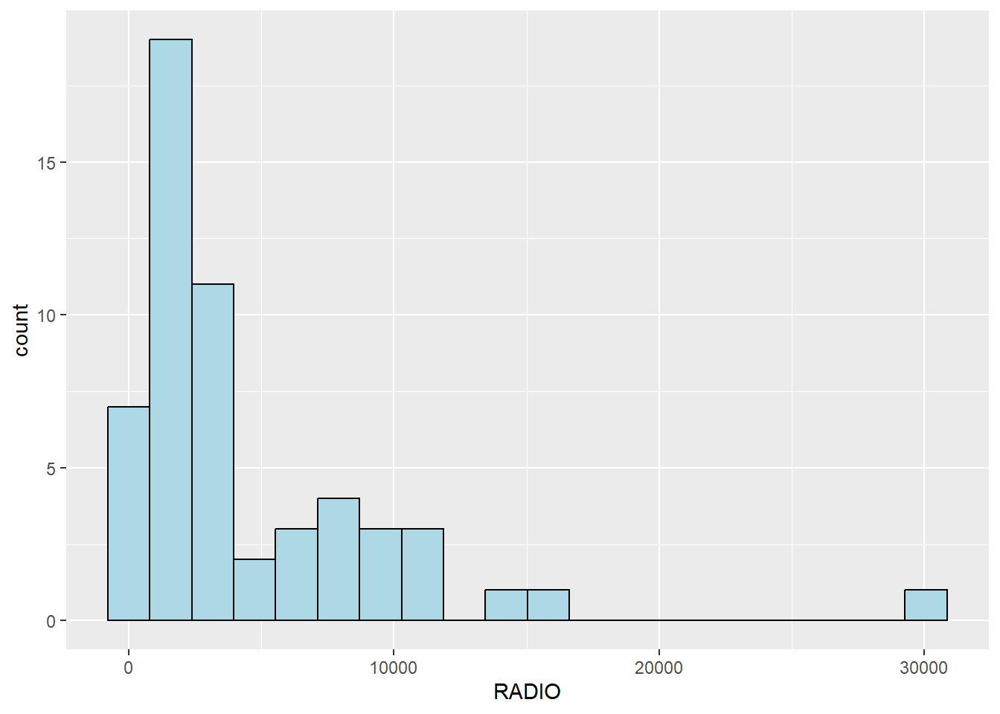
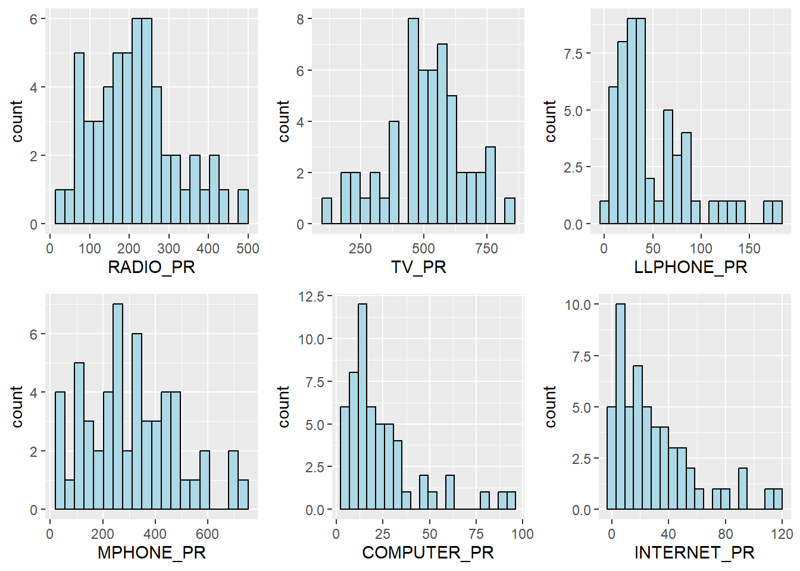
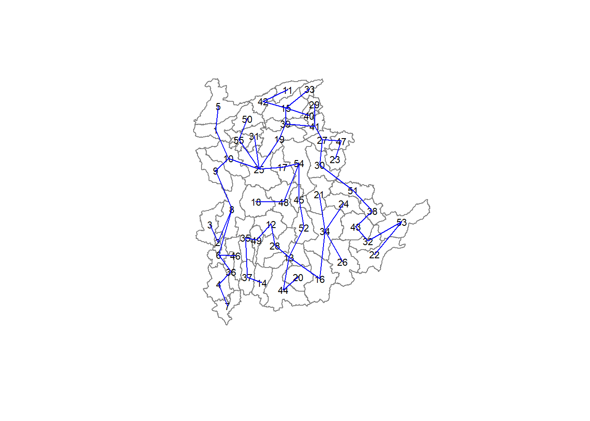
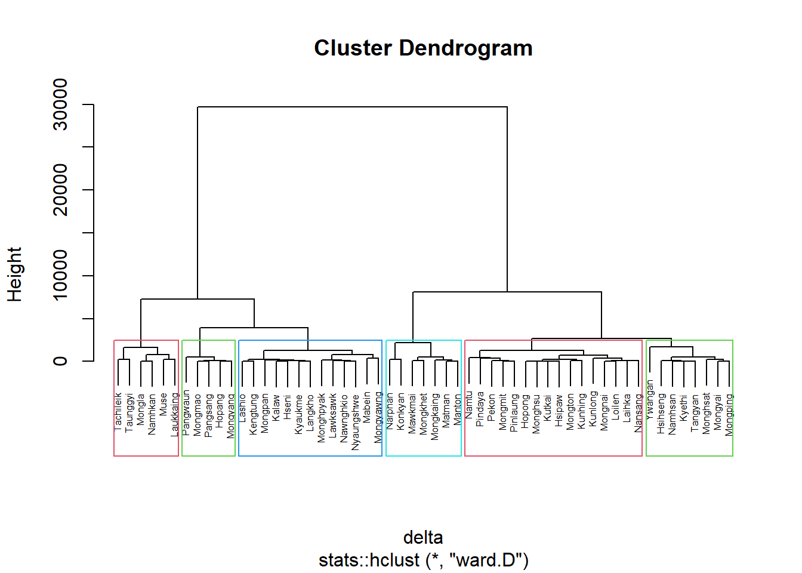

pacman::p_load(sp, rgdal, spdep, tmap, sf, ClustGeo,
ggpubr, cluster, factoextra, NbClust,
heatmaply, corrplot, psych, tidyverse, GGally)Hands on 06
Data Import And Preperation
12.4.1 Importing geospatial data into R environment
Filter to select records that meet those requirements
shan_sf <- st_read(dsn = "data",
layer = "myanmar_township_boundaries") %>%
filter(ST %in% c("Shan (East)", "Shan (North)", "Shan (South)")) %>%
select(c(2:7))Reading layer `myanmar_township_boundaries' from data source
`C:\shaysnutss\IS1455-GAA\Hands-on_Ex\Hands-on_Ex06\data' using driver `ESRI Shapefile'
Simple feature collection with 330 features and 14 fields
Geometry type: MULTIPOLYGON
Dimension: XY
Bounding box: xmin: 92.17275 ymin: 9.671252 xmax: 101.1699 ymax: 28.54554
Geodetic CRS: WGS 8412.4.2 Importing aspatial data into R environment
The csv file will be import using read_csv function of readr package.
The code chunks used are shown below:
ict <- read_csv ("data/Shan-ICT.csv")summary(ict) District Pcode District Name Township Pcode Township Name
Length:55 Length:55 Length:55 Length:55
Class :character Class :character Class :character Class :character
Mode :character Mode :character Mode :character Mode :character
Total households Radio Television Land line phone
Min. : 3318 Min. : 115 Min. : 728 Min. : 20.0
1st Qu.: 8711 1st Qu.: 1260 1st Qu.: 3744 1st Qu.: 266.5
Median :13685 Median : 2497 Median : 6117 Median : 695.0
Mean :18369 Mean : 4487 Mean :10183 Mean : 929.9
3rd Qu.:23471 3rd Qu.: 6192 3rd Qu.:13906 3rd Qu.:1082.5
Max. :82604 Max. :30176 Max. :62388 Max. :6736.0
Mobile phone Computer Internet at home
Min. : 150 Min. : 20.0 Min. : 8.0
1st Qu.: 2037 1st Qu.: 121.0 1st Qu.: 88.0
Median : 3559 Median : 244.0 Median : 316.0
Mean : 6470 Mean : 575.5 Mean : 760.2
3rd Qu.: 7177 3rd Qu.: 507.0 3rd Qu.: 630.5
Max. :48461 Max. :6705.0 Max. :9746.0 12.4.3 Derive new variables using dplyr package
The unit of measurement of the values are number of household. Using these values directly will be bias by the underlying total number of households. In general, the townships with relatively higher total number of households will also have higher number of households owning radio, TV, etc.
In order to overcome this problem, we will derive the penetration rate of each ICT variable by using the code chunk below.
ict_derived <- ict %>%
mutate(`RADIO_PR` = `Radio`/`Total households`*1000) %>%
mutate(`TV_PR` = `Television`/`Total households`*1000) %>%
mutate(`LLPHONE_PR` = `Land line phone`/`Total households`*1000) %>%
mutate(`MPHONE_PR` = `Mobile phone`/`Total households`*1000) %>%
mutate(`COMPUTER_PR` = `Computer`/`Total households`*1000) %>%
mutate(`INTERNET_PR` = `Internet at home`/`Total households`*1000) %>%
rename(`DT_PCODE` =`District Pcode`,`DT`=`District Name`,
`TS_PCODE`=`Township Pcode`, `TS`=`Township Name`,
`TT_HOUSEHOLDS`=`Total households`,
`RADIO`=`Radio`, `TV`=`Television`,
`LLPHONE`=`Land line phone`, `MPHONE`=`Mobile phone`,
`COMPUTER`=`Computer`, `INTERNET`=`Internet at home`) 12.5 Exploratory Data Analysis (EDA)
12.5.1 EDA using statistical graphics
We can plot the distribution of the variables (i.e. Number of households with radio) by using appropriate Exploratory Data Analysis (EDA) as shown in the code chunk below.
Histogram is useful to identify the overall distribution of the data values (i.e. left skew, right skew or normal distribution)
ggplot(data=ict_derived,
aes(x=`RADIO`)) +
geom_histogram(bins=20,
color="black",
fill="light blue")
ggplot(data=ict_derived,
aes(x=`RADIO`)) +
geom_boxplot(color="black",
fill="light blue")
ggplot(data=ict_derived,
aes(x=`RADIO_PR`)) +
geom_histogram(bins=20,
color="black",
fill="light blue")
ggplot(data=ict_derived,
aes(x=`RADIO_PR`)) +
geom_boxplot(color="black",
fill="light blue")
The code chunks below are used to create the data visualisation. They consist of two main parts. First, we will create the individual histograms using the code chunk below.
radio <- ggplot(data=ict_derived,
aes(x= `RADIO_PR`)) +
geom_histogram(bins=20,
color="black",
fill="light blue")
tv <- ggplot(data=ict_derived,
aes(x= `TV_PR`)) +
geom_histogram(bins=20,
color="black",
fill="light blue")
llphone <- ggplot(data=ict_derived,
aes(x= `LLPHONE_PR`)) +
geom_histogram(bins=20,
color="black",
fill="light blue")
mphone <- ggplot(data=ict_derived,
aes(x= `MPHONE_PR`)) +
geom_histogram(bins=20,
color="black",
fill="light blue")
computer <- ggplot(data=ict_derived,
aes(x= `COMPUTER_PR`)) +
geom_histogram(bins=20,
color="black",
fill="light blue")
internet <- ggplot(data=ict_derived,
aes(x= `INTERNET_PR`)) +
geom_histogram(bins=20,
color="black",
fill="light blue")Next, the ggarrange() function of ggpubr package is used to group these histograms together.
ggarrange(radio, tv, llphone, mphone, computer, internet,
ncol = 3,
nrow = 2)
12.5.2 EDA using choropleth map
12.5.2.1 Joining geospatial data with aspatial data
Before we can prepare the choropleth map, we need to combine both the geospatial data object (i.e. shan_sf) and aspatial data.frame object (i.e. ict_derived) into one. This will be performed by using the left_join function of dplyr package. The shan_sf simple feature data.frame will be used as the base data object and the ict_derived data.frame will be used as the join table.
The code chunks below is used to perform the task. The unique identifier used to join both data objects is TS_PCODE.
shan_sf <- left_join(shan_sf,
ict_derived, by=c("TS_PCODE"="TS_PCODE"))
write_rds(shan_sf, "data/rds/shan_sf.rds")#shan_sf <- read_rds("data/rds/shan_sf.rds")12.5.2.2 Preparing a choropleth map
To have a quick look at the distribution of Radio penetration rate of Shan State at township level, a choropleth map will be prepared.
The code chunks below are used to prepare the choroplethby using the qtm() function of tmap package.
qtm(shan_sf, "RADIO_PR")
In order to reveal the distribution shown in the choropleth map above are bias to the underlying total number of households at the townships, we will create two choropleth maps, one for the total number of households (i.e. TT_HOUSEHOLDS.map) and one for the total number of household with Radio (RADIO.map) by using the code chunk below.
TT_HOUSEHOLDS.map <- tm_shape(shan_sf) +
tm_fill(col = "TT_HOUSEHOLDS",
n = 5,
style = "jenks",
title = "Total households") +
tm_borders(alpha = 0.5)
RADIO.map <- tm_shape(shan_sf) +
tm_fill(col = "RADIO",
n = 5,
style = "jenks",
title = "Number Radio ") +
tm_borders(alpha = 0.5)
tmap_arrange(TT_HOUSEHOLDS.map, RADIO.map,
asp=NA, ncol=2)
Notice that the choropleth maps above clearly show that townships with relatively larger number ot households are also showing relatively higher number of radio ownership.
Now let us plot the choropleth maps showing the dsitribution of total number of households and Radio penetration rate by using the code chunk below.
tm_shape(shan_sf) +
tm_polygons(c("TT_HOUSEHOLDS", "RADIO_PR"),
style="jenks") +
tm_facets(sync = TRUE, ncol = 2) +
tm_legend(legend.position = c("right", "bottom"))+
tm_layout(outer.margins=0, asp=0)
12.6 Correlation Analysis
Before we perform cluster analysis, it is important for us to ensure that the cluster variables are not highly correlated.
In this section, you will learn how to use corrplot.mixed() function of corrplot package to visualise and analyse the correlation of the input variables.
cluster_vars.cor = cor(ict_derived[,12:17])
corrplot.mixed(cluster_vars.cor,
lower = "ellipse",
upper = "number",
tl.pos = "lt",
diag = "l",
tl.col = "black")
The correlation plot above shows that COMPUTER_PR and INTERNET_PR are highly correlated. This suggest that only one of them should be used in the cluster analysis instead of both.
12.7 Hierarchy Cluster Analysis
In this section, you will learn how to perform hierarchical cluster analysis. The analysis consists of four major steps:
12.7.1 Extracting clustering variables
The code chunk below will be used to extract the clustering variables from the shan_sf simple feature object into data.frame.
cluster_vars <- shan_sf %>%
st_set_geometry(NULL) %>%
select("TS.x", "RADIO_PR", "TV_PR", "LLPHONE_PR", "MPHONE_PR", "COMPUTER_PR")
head(cluster_vars,10) TS.x RADIO_PR TV_PR LLPHONE_PR MPHONE_PR COMPUTER_PR
1 Mongmit 286.1852 554.1313 35.30618 260.6944 12.15939
2 Pindaya 417.4647 505.1300 19.83584 162.3917 12.88190
3 Ywangan 484.5215 260.5734 11.93591 120.2856 4.41465
4 Pinlaung 231.6499 541.7189 28.54454 249.4903 13.76255
5 Mabein 449.4903 708.6423 72.75255 392.6089 16.45042
6 Kalaw 280.7624 611.6204 42.06478 408.7951 29.63160
7 Pekon 318.6118 535.8494 39.83270 214.8476 18.97032
8 Lawksawk 387.1017 630.0035 31.51366 320.5686 21.76677
9 Nawnghkio 349.3359 547.9456 38.44960 323.0201 15.76465
10 Kyaukme 210.9548 601.1773 39.58267 372.4930 30.94709we want to retain row name
row.names(cluster_vars) <- cluster_vars$"TS.x"
head(cluster_vars,10) TS.x RADIO_PR TV_PR LLPHONE_PR MPHONE_PR COMPUTER_PR
Mongmit Mongmit 286.1852 554.1313 35.30618 260.6944 12.15939
Pindaya Pindaya 417.4647 505.1300 19.83584 162.3917 12.88190
Ywangan Ywangan 484.5215 260.5734 11.93591 120.2856 4.41465
Pinlaung Pinlaung 231.6499 541.7189 28.54454 249.4903 13.76255
Mabein Mabein 449.4903 708.6423 72.75255 392.6089 16.45042
Kalaw Kalaw 280.7624 611.6204 42.06478 408.7951 29.63160
Pekon Pekon 318.6118 535.8494 39.83270 214.8476 18.97032
Lawksawk Lawksawk 387.1017 630.0035 31.51366 320.5686 21.76677
Nawnghkio Nawnghkio 349.3359 547.9456 38.44960 323.0201 15.76465
Kyaukme Kyaukme 210.9548 601.1773 39.58267 372.4930 30.94709shan_ict <- select(cluster_vars, c(2:6))
head(shan_ict, 10) RADIO_PR TV_PR LLPHONE_PR MPHONE_PR COMPUTER_PR
Mongmit 286.1852 554.1313 35.30618 260.6944 12.15939
Pindaya 417.4647 505.1300 19.83584 162.3917 12.88190
Ywangan 484.5215 260.5734 11.93591 120.2856 4.41465
Pinlaung 231.6499 541.7189 28.54454 249.4903 13.76255
Mabein 449.4903 708.6423 72.75255 392.6089 16.45042
Kalaw 280.7624 611.6204 42.06478 408.7951 29.63160
Pekon 318.6118 535.8494 39.83270 214.8476 18.97032
Lawksawk 387.1017 630.0035 31.51366 320.5686 21.76677
Nawnghkio 349.3359 547.9456 38.44960 323.0201 15.76465
Kyaukme 210.9548 601.1773 39.58267 372.4930 30.9470912.7.2 Data Standardisation
In general, multiple variables will be used in cluster analysis. It is not unusual their values range are different. In order to avoid the cluster analysis result is baised to clustering variables with large values, it is useful to standardise the input variables before performing cluster analysis.
12.7.3 Min-Max standardisation
In the code chunk below, normalize() of heatmaply package is used to stadardisation the clustering variables by using Min-Max method. The summary() is then used to display the summary statistics of the standardised clustering variables.
shan_ict.std <- normalize(shan_ict)
summary(shan_ict.std) RADIO_PR TV_PR LLPHONE_PR MPHONE_PR
Min. :0.0000 Min. :0.0000 Min. :0.0000 Min. :0.0000
1st Qu.:0.2544 1st Qu.:0.4600 1st Qu.:0.1123 1st Qu.:0.2199
Median :0.4097 Median :0.5523 Median :0.1948 Median :0.3846
Mean :0.4199 Mean :0.5416 Mean :0.2703 Mean :0.3972
3rd Qu.:0.5330 3rd Qu.:0.6750 3rd Qu.:0.3746 3rd Qu.:0.5608
Max. :1.0000 Max. :1.0000 Max. :1.0000 Max. :1.0000
COMPUTER_PR
Min. :0.00000
1st Qu.:0.09598
Median :0.17607
Mean :0.23692
3rd Qu.:0.29868
Max. :1.00000 12.7.4 Z-score standardisation
Z-score standardisation can be performed easily by using scale() of Base R. The code chunk below will be used to stadardisation the clustering variables by using Z-score method.
shan_ict.z <- scale(shan_ict)
describe(shan_ict.z) vars n mean sd median trimmed mad min max range skew kurtosis
RADIO_PR 1 55 0 1 -0.04 -0.06 0.94 -1.85 2.55 4.40 0.48 -0.27
TV_PR 2 55 0 1 0.05 0.04 0.78 -2.47 2.09 4.56 -0.38 -0.23
LLPHONE_PR 3 55 0 1 -0.33 -0.15 0.68 -1.19 3.20 4.39 1.37 1.49
MPHONE_PR 4 55 0 1 -0.05 -0.06 1.01 -1.58 2.40 3.98 0.48 -0.34
COMPUTER_PR 5 55 0 1 -0.26 -0.18 0.64 -1.03 3.31 4.34 1.80 2.96
se
RADIO_PR 0.13
TV_PR 0.13
LLPHONE_PR 0.13
MPHONE_PR 0.13
COMPUTER_PR 0.1312.7.5 Visualising the standardised clustering variables
Beside reviewing the summary statistics of the standardised clustering variables, it is also a good practice to visualise their distribution graphical.
The code chunk below plot the scaled Radio_PR field.
r <- ggplot(data=ict_derived,
aes(x= `RADIO_PR`)) +
geom_histogram(bins=20,
color="black",
fill="light blue") +
ggtitle("Raw values without standardisation")
shan_ict_s_df <- as.data.frame(shan_ict.std)
s <- ggplot(data=shan_ict_s_df,
aes(x=`RADIO_PR`)) +
geom_histogram(bins=20,
color="black",
fill="light blue") +
ggtitle("Min-Max Standardisation")
shan_ict_z_df <- as.data.frame(shan_ict.z)
z <- ggplot(data=shan_ict_z_df,
aes(x=`RADIO_PR`)) +
geom_histogram(bins=20,
color="black",
fill="light blue") +
ggtitle("Z-score Standardisation")
ggarrange(r, s, z,
ncol = 3,
nrow = 1)
r <- ggplot(data=ict_derived,
aes(x= `RADIO_PR`)) +
geom_density(color="black",
fill="light blue") +
ggtitle("Raw values without standardisation")
shan_ict_s_df <- as.data.frame(shan_ict.std)
s <- ggplot(data=shan_ict_s_df,
aes(x=`RADIO_PR`)) +
geom_density(color="black",
fill="light blue") +
ggtitle("Min-Max Standardisation")
shan_ict_z_df <- as.data.frame(shan_ict.z)
z <- ggplot(data=shan_ict_z_df,
aes(x=`RADIO_PR`)) +
geom_density(color="black",
fill="light blue") +
ggtitle("Z-score Standardisation")
ggarrange(r, s, z,
ncol = 3,
nrow = 1)12.7.6 Computing proximity matrix
In R, many packages provide functions to calculate distance matrix. We will compute the proximity matrix by using dist() of R.
dist() supports six distance proximity calculations, they are: euclidean, maximum, manhattan, canberra, binary and minkowski. The default is euclidean proximity matrix.
The code chunk below is used to compute the proximity matrix using euclidean method.
proxmat <- dist(shan_ict, method = 'euclidean')
proxmat Mongmit Pindaya Ywangan Pinlaung Mabein Kalaw
Pindaya 171.86828
Ywangan 381.88259 257.31610
Pinlaung 57.46286 208.63519 400.05492
Mabein 263.37099 313.45776 529.14689 312.66966
Kalaw 160.05997 302.51785 499.53297 181.96406 198.14085
Pekon 59.61977 117.91580 336.50410 94.61225 282.26877 211.91531
Lawksawk 140.11550 204.32952 432.16535 192.57320 130.36525 140.01101
Nawnghkio 89.07103 180.64047 377.87702 139.27495 204.63154 127.74787
Kyaukme 144.02475 311.01487 505.89191 139.67966 264.88283 79.42225
Muse 563.01629 704.11252 899.44137 571.58335 453.27410 412.46033
Laihka 141.87227 298.61288 491.83321 101.10150 345.00222 197.34633
Mongnai 115.86190 258.49346 422.71934 64.52387 358.86053 200.34668
Mawkmai 434.92968 437.99577 397.03752 398.11227 693.24602 562.59200
Kutkai 97.61092 212.81775 360.11861 78.07733 340.55064 204.93018
Mongton 192.67961 283.35574 361.23257 163.42143 425.16902 267.87522
Mongyai 256.72744 287.41816 333.12853 220.56339 516.40426 386.74701
Mongkaing 503.61965 481.71125 364.98429 476.29056 747.17454 625.24500
Lashio 251.29457 398.98167 602.17475 262.51735 231.28227 106.69059
Mongpan 193.32063 335.72896 483.68125 192.78316 301.52942 114.69105
Matman 401.25041 354.39039 255.22031 382.40610 637.53975 537.63884
Tachileik 529.63213 635.51774 807.44220 555.01039 365.32538 373.64459
Narphan 406.15714 474.50209 452.95769 371.26895 630.34312 463.53759
Mongkhet 349.45980 391.74783 408.97731 305.86058 610.30557 465.52013
Hsipaw 118.18050 245.98884 388.63147 76.55260 366.42787 212.36711
Monghsat 214.20854 314.71506 432.98028 160.44703 470.48135 317.96188
Mongmao 242.54541 402.21719 542.85957 217.58854 384.91867 195.18913
Nansang 104.91839 275.44246 472.77637 85.49572 287.92364 124.30500
Laukkaing 568.27732 726.85355 908.82520 563.81750 520.67373 427.77791
Pangsang 272.67383 428.24958 556.82263 244.47146 418.54016 224.03998
Namtu 179.62251 225.40822 444.66868 170.04533 366.16094 307.27427
Monghpyak 177.76325 221.30579 367.44835 222.20020 212.69450 167.08436
Konkyan 403.39082 500.86933 528.12533 365.44693 613.51206 444.75859
Mongping 265.12574 310.64850 337.94020 229.75261 518.16310 375.64739
Hopong 136.93111 223.06050 352.85844 98.14855 398.00917 264.16294
Nyaungshwe 99.38590 216.52463 407.11649 138.12050 210.21337 95.66782
Hsihseng 131.49728 172.00796 342.91035 111.61846 381.20187 287.11074
Mongla 384.30076 549.42389 728.16301 372.59678 406.09124 260.26411
Hseni 189.37188 337.98982 534.44679 204.47572 213.61240 38.52842
Kunlong 224.12169 355.47066 531.63089 194.76257 396.61508 273.01375
Hopang 281.05362 443.26362 596.19312 265.96924 368.55167 185.14704
Namhkan 386.02794 543.81859 714.43173 382.78835 379.56035 246.39577
Kengtung 246.45691 385.68322 573.23173 263.48638 219.47071 88.29335
Langkho 164.26299 323.28133 507.78892 168.44228 253.84371 67.19580
Monghsu 109.15790 198.35391 340.42789 80.86834 367.19820 237.34578
Taunggyi 399.84278 503.75471 697.98323 429.54386 226.24011 252.26066
Pangwaun 381.51246 512.13162 580.13146 356.37963 523.44632 338.35194
Kyethi 202.92551 175.54012 287.29358 189.47065 442.07679 360.17247
Loilen 145.48666 293.61143 469.51621 91.56527 375.06406 217.19877
Manton 430.64070 402.42888 306.16379 405.83081 674.01120 560.16577
Mongyang 309.51302 475.93982 630.71590 286.03834 411.88352 233.56349
Kunhing 173.50424 318.23811 449.67218 141.58836 375.82140 197.63683
Mongyawng 214.21738 332.92193 570.56521 235.55497 193.49994 173.43078
Tangyan 195.92520 208.43740 324.77002 169.50567 448.59948 348.06617
Namhsan 237.78494 228.41073 286.16305 214.33352 488.33873 385.88676
Pekon Lawksawk Nawnghkio Kyaukme Muse Laihka
Pindaya
Ywangan
Pinlaung
Mabein
Kalaw
Pekon
Lawksawk 157.51129
Nawnghkio 113.15370 90.82891
Kyaukme 202.12206 186.29066 157.04230
Muse 614.56144 510.13288 533.68806 434.75768
Laihka 182.23667 246.74469 211.88187 128.24979 526.65211
Mongnai 151.60031 241.71260 182.21245 142.45669 571.97975 100.53457
Mawkmai 416.00669 567.52693 495.15047 512.02846 926.93007 429.96554
Kutkai 114.98048 224.64646 147.44053 170.93318 592.90743 144.67198
Mongton 208.14888 311.07742 225.81118 229.28509 634.71074 212.07320
Mongyai 242.52301 391.26989 319.57938 339.27780 763.91399 264.13364
Mongkaing 480.23965 625.18712 546.69447 586.05094 995.66496 522.96309
Lashio 303.80011 220.75270 230.55346 129.95255 313.15288 238.64533
Mongpan 243.30037 228.54223 172.84425 110.37831 447.49969 210.76951
Matman 368.25761 515.39711 444.05061 505.52285 929.11283 443.25453
Tachileik 573.39528 441.82621 470.45533 429.15493 221.19950 549.08985
Narphan 416.84901 523.69580 435.59661 420.30003 770.40234 392.32592
Mongkhet 342.08722 487.41102 414.10280 409.03553 816.44931 324.97428
Hsipaw 145.37542 249.35081 176.09570 163.95741 591.03355 128.42987
Monghsat 225.64279 352.31496 289.83220 253.25370 663.76026 158.93517
Mongmao 293.70625 314.64777 257.76465 146.09228 451.82530 185.99082
Nansang 160.37607 188.78869 151.13185 60.32773 489.35308 78.78999
Laukkaing 624.82399 548.83928 552.65554 428.74978 149.26996 507.39700
Pangsang 321.81214 345.91486 287.10769 175.35273 460.24292 214.19291
Namtu 165.02707 260.95300 257.52713 270.87277 659.16927 185.86794
Monghpyak 190.93173 142.31691 93.03711 217.64419 539.43485 293.22640
Konkyan 421.48797 520.31264 439.34272 393.79911 704.86973 351.75354
Mongping 259.68288 396.47081 316.14719 330.28984 744.44948 272.82761
Hopong 138.86577 274.91604 204.88286 218.84211 648.68011 157.48857
Nyaungshwe 139.31874 104.17830 43.26545 126.50414 505.88581 201.71653
Hsihseng 105.30573 257.11202 209.88026 250.27059 677.66886 175.89761
Mongla 441.20998 393.18472 381.40808 241.58966 256.80556 315.93218
Hseni 243.98001 171.50398 164.05304 81.20593 381.30567 204.49010
Kunlong 249.36301 318.30406 285.04608 215.63037 547.24297 122.68682
Hopang 336.38582 321.16462 279.84188 154.91633 377.44407 230.78652
Namhkan 442.77120 379.41126 367.33575 247.81990 238.67060 342.43665
Kengtung 297.67761 209.38215 208.29647 136.23356 330.08211 258.23950
Langkho 219.21623 190.30257 156.51662 51.67279 413.64173 160.94435
Monghsu 113.84636 242.04063 170.09168 200.77712 633.21624 163.28926
Taunggyi 440.66133 304.96838 344.79200 312.60547 250.81471 425.36916
Pangwaun 423.81347 453.02765 381.67478 308.31407 541.97887 351.78203
Kyethi 162.43575 317.74604 267.21607 328.14177 757.16745 255.83275
Loilen 181.94596 265.29318 219.26405 146.92675 560.43400 59.69478
Manton 403.82131 551.13000 475.77296 522.86003 941.49778 458.30232
Mongyang 363.58788 363.37684 323.32123 188.59489 389.59919 229.71502
Kunhing 213.46379 278.68953 206.15773 145.00266 533.00162 142.03682
Mongyawng 248.43910 179.07229 220.61209 181.55295 422.37358 211.99976
Tangyan 167.79937 323.14701 269.07880 306.78359 736.93741 224.29176
Namhsan 207.16559 362.84062 299.74967 347.85944 778.52971 273.79672
Mongnai Mawkmai Kutkai Mongton Mongyai Mongkaing
Pindaya
Ywangan
Pinlaung
Mabein
Kalaw
Pekon
Lawksawk
Nawnghkio
Kyaukme
Muse
Laihka
Mongnai
Mawkmai 374.50873
Kutkai 91.15307 364.95519
Mongton 131.67061 313.35220 107.06341
Mongyai 203.23607 178.70499 188.94166 159.79790
Mongkaing 456.00842 133.29995 428.96133 365.50032 262.84016
Lashio 270.86983 638.60773 289.82513 347.11584 466.36472 708.65819
Mongpan 178.09554 509.99632 185.18173 200.31803 346.39710 563.56780
Matman 376.33870 147.83545 340.86349 303.04574 186.95158 135.51424
Tachileik 563.95232 919.38755 568.99109 608.76740 750.29555 967.14087
Narphan 329.31700 273.75350 314.27683 215.97925 248.82845 285.65085
Mongkhet 275.76855 115.58388 273.91673 223.22828 104.98924 222.60577
Hsipaw 52.68195 351.34601 51.46282 90.69766 177.33790 423.77868
Monghsat 125.25968 275.09705 154.32012 150.98053 127.35225 375.60376
Mongmao 188.29603 485.52853 204.69232 206.57001 335.61300 552.31959
Nansang 92.79567 462.41938 130.04549 199.58124 288.55962 542.16609
Laukkaing 551.56800 882.51110 580.38112 604.66190 732.68347 954.11795
Pangsang 204.25746 484.14757 228.33583 210.77938 343.30638 548.40662
Namtu 209.35473 427.95451 225.28268 308.71751 278.02761 525.04057
Monghpyak 253.26470 536.71695 206.61627 258.04282 370.01575 568.21089
Konkyan 328.82831 339.01411 310.60810 248.25265 287.87384 380.92091
Mongping 202.99615 194.31049 182.75266 119.86993 65.38727 257.18572
Hopong 91.53795 302.84362 73.45899 106.21031 124.62791 379.37916
Nyaungshwe 169.63695 502.99026 152.15482 219.72196 327.13541 557.32112
Hsihseng 142.36728 329.29477 128.21054 194.64317 162.27126 411.59788
Mongla 354.10985 686.88950 388.40984 411.06668 535.28615 761.48327
Hseni 216.81639 582.53670 229.37894 286.75945 408.23212 648.04408
Kunlong 202.92529 446.53763 204.54010 270.02165 299.36066 539.91284
Hopang 243.00945 561.24281 263.31986 273.50305 408.73288 626.17673
Namhkan 370.05669 706.47792 392.48568 414.53594 550.62819 771.39688
Kengtung 272.28711 632.54638 279.19573 329.38387 460.39706 692.74693
Langkho 174.67678 531.08019 180.51419 236.70878 358.95672 597.42714
Monghsu 84.11238 332.07962 62.60859 107.04894 154.86049 400.71816
Taunggyi 448.55282 810.74692 450.33382 508.40925 635.94105 866.21117
Pangwaun 312.13429 500.68857 321.80465 257.50434 394.07696 536.95736
Kyethi 210.50453 278.85535 184.23422 222.52947 137.79420 352.06533
Loilen 58.41263 388.73386 131.56529 176.16001 224.79239 482.18190
Manton 391.54062 109.08779 361.82684 310.20581 195.59882 81.75337
Mongyang 260.39387 558.83162 285.33223 295.60023 414.31237 631.91325
Kunhing 110.55197 398.43973 108.84990 114.03609 238.99570 465.03971
Mongyawng 275.77546 620.04321 281.03383 375.22688 445.78964 700.98284
Tangyan 180.37471 262.66006 166.61820 198.88460 109.08506 348.56123
Namhsan 218.10003 215.19289 191.32762 196.76188 77.35900 288.66231
Lashio Mongpan Matman Tachileik Narphan Mongkhet
Pindaya
Ywangan
Pinlaung
Mabein
Kalaw
Pekon
Lawksawk
Nawnghkio
Kyaukme
Muse
Laihka
Mongnai
Mawkmai
Kutkai
Mongton
Mongyai
Mongkaing
Lashio
Mongpan 172.33279
Matman 628.11049 494.81014
Tachileik 311.95286 411.03849 890.12935
Narphan 525.63854 371.13393 312.05193 760.29566
Mongkhet 534.44463 412.17123 203.02855 820.50164 217.28718
Hsipaw 290.86435 179.52054 344.45451 576.18780 295.40170 253.80950
Monghsat 377.86793 283.30992 313.59911 677.09508 278.21548 167.98445
Mongmao 214.23677 131.59966 501.59903 472.95568 331.42618 375.35820
Nansang 184.47950 144.77393 458.06573 486.77266 398.13308 360.99219
Laukkaing 334.65738 435.58047 903.72094 325.06329 708.82887 769.06406
Pangsang 236.72516 140.23910 506.29940 481.31907 316.30314 375.58139
Namtu 365.88437 352.91394 416.65397 659.56458 494.36143 355.99713
Monghpyak 262.09281 187.85699 470.46845 444.04411 448.40651 462.63265
Konkyan 485.51312 365.87588 392.40306 730.92980 158.82353 254.24424
Mongping 454.52548 318.47482 201.65224 727.08969 188.64567 113.80917
Hopong 345.31042 239.43845 291.84351 632.45718 294.40441 212.99485
Nyaungshwe 201.58191 137.29734 460.91883 445.81335 427.94086 417.08639
Hsihseng 369.00833 295.87811 304.02806 658.87060 377.52977 256.70338
Mongla 179.95877 253.20001 708.17595 347.33155 531.46949 574.40292
Hseni 79.41836 120.66550 564.64051 354.90063 474.12297 481.88406
Kunlong 295.23103 288.03320 468.27436 595.70536 413.07823 341.68641
Hopang 170.63913 135.62913 573.55355 403.82035 397.85908 451.51070
Namhkan 173.27153 240.34131 715.42102 295.91660 536.85519 596.19944
Kengtung 59.85893 142.21554 613.01033 295.90429 505.40025 531.35998
Langkho 115.18145 94.98486 518.86151 402.33622 420.65204 428.08061
Monghsu 325.71557 216.25326 308.13805 605.02113 311.92379 247.73318
Taunggyi 195.14541 319.81385 778.45810 150.84117 684.20905 712.80752
Pangwaun 362.45608 232.52209 523.43600 540.60474 264.64997 407.02947
Kyethi 447.10266 358.89620 233.83079 728.87329 374.90376 233.25039
Loilen 268.92310 207.25000 406.56282 573.75476 354.79137 284.76895
Manton 646.66493 507.96808 59.52318 910.23039 280.26395 181.33894
Mongyang 209.33700 194.93467 585.61776 448.79027 401.39475 445.40621
Kunhing 255.10832 137.85278 403.66587 532.26397 281.62645 292.49814
Mongyawng 172.70139 275.15989 601.80824 432.10118 572.76394 522.91815
Tangyan 429.84475 340.39128 242.78233 719.84066 348.84991 201.49393
Namhsan 472.04024 364.77086 180.09747 754.03913 316.54695 170.90848
Hsipaw Monghsat Mongmao Nansang Laukkaing Pangsang
Pindaya
Ywangan
Pinlaung
Mabein
Kalaw
Pekon
Lawksawk
Nawnghkio
Kyaukme
Muse
Laihka
Mongnai
Mawkmai
Kutkai
Mongton
Mongyai
Mongkaing
Lashio
Mongpan
Matman
Tachileik
Narphan
Mongkhet
Hsipaw
Monghsat 121.78922
Mongmao 185.99483 247.17708
Nansang 120.24428 201.92690 164.99494
Laukkaing 569.06099 626.44910 404.00848 480.60074
Pangsang 205.04337 256.37933 57.60801 193.36162 408.04016
Namtu 229.44658 231.78673 365.03882 217.61884 664.06286 392.97391
Monghpyak 237.67919 356.84917 291.88846 227.52638 565.84279 315.11651
Konkyan 296.74316 268.25060 281.87425 374.70456 635.92043 274.81900
Mongping 168.92101 140.95392 305.57166 287.36626 708.13447 308.33123
Hopong 62.86179 100.45714 244.16253 167.66291 628.48557 261.51075
Nyaungshwe 169.92664 286.37238 230.45003 131.18943 520.24345 257.77823
Hsihseng 136.54610 153.49551 311.98001 193.53779 670.74564 335.52974
Mongla 373.47509 429.00536 216.24705 289.45119 202.55831 217.88123
Hseni 231.48538 331.22632 184.67099 136.45492 391.74585 214.66375
Kunlong 205.10051 202.31862 224.43391 183.01388 521.88657 258.49342
Hopang 248.72536 317.64824 78.29342 196.47091 331.67199 92.57672
Namhkan 382.79302 455.10875 223.32205 302.89487 196.46063 231.38484
Kengtung 284.08582 383.72138 207.58055 193.67980 351.48520 229.85484
Langkho 183.05109 279.52329 134.50170 99.39859 410.41270 167.65920
Monghsu 58.55724 137.24737 242.43599 153.59962 619.01766 260.52971
Taunggyi 462.31183 562.88102 387.33906 365.04897 345.98041 405.59730
Pangwaun 298.12447 343.53898 187.40057 326.12960 470.63605 157.48757
Kyethi 195.17677 190.50609 377.89657 273.02385 749.99415 396.89963
Loilen 98.04789 118.65144 190.26490 94.23028 535.57527 207.94433
Manton 359.60008 317.15603 503.79786 476.55544 907.38406 504.75214
Mongyang 267.10497 312.64797 91.06281 218.49285 326.19219 108.37735
Kunhing 90.77517 165.38834 103.91040 128.20940 500.41640 123.18870
Mongyawng 294.70967 364.40429 296.40789 191.11990 454.80044 336.16703
Tangyan 167.69794 144.59626 347.14183 249.70235 722.40954 364.76893
Namhsan 194.47928 169.56962 371.71448 294.16284 760.45960 385.65526
Namtu Monghpyak Konkyan Mongping Hopong Nyaungshwe
Pindaya
Ywangan
Pinlaung
Mabein
Kalaw
Pekon
Lawksawk
Nawnghkio
Kyaukme
Muse
Laihka
Mongnai
Mawkmai
Kutkai
Mongton
Mongyai
Mongkaing
Lashio
Mongpan
Matman
Tachileik
Narphan
Mongkhet
Hsipaw
Monghsat
Mongmao
Nansang
Laukkaing
Pangsang
Namtu
Monghpyak 346.57799
Konkyan 478.37690 463.39594
Mongping 321.66441 354.76537 242.02901
Hopong 206.82668 267.95563 304.49287 134.00139
Nyaungshwe 271.41464 103.97300 432.35040 319.32583 209.32532
Hsihseng 131.89940 285.37627 383.49700 199.64389 91.65458 225.80242
Mongla 483.49434 408.03397 468.09747 512.61580 432.31105 347.60273
Hseni 327.41448 200.26876 448.84563 395.58453 286.41193 130.86310
Kunlong 233.60474 357.44661 329.11433 309.05385 219.06817 285.13095
Hopang 408.24516 304.26577 348.18522 379.27212 309.77356 247.19891
Namhkan 506.32466 379.50202 481.59596 523.74815 444.13246 333.32428
Kengtung 385.33554 221.47613 474.82621 442.80821 340.47382 177.75714
Langkho 305.03473 200.27496 386.95022 343.96455 239.63685 128.26577
Monghsu 209.64684 232.17823 331.72187 158.90478 43.40665 173.82799
Taunggyi 518.72748 334.17439 650.56905 621.53039 513.76415 325.09619
Pangwaun 517.03554 381.95144 263.97576 340.37881 346.00673 352.92324
Kyethi 186.90932 328.16234 400.10989 187.43974 136.49038 288.06872
Loilen 194.24075 296.99681 334.19820 231.99959 124.74445 206.40432
Manton 448.58230 502.20840 366.66876 200.48082 310.58885 488.79874
Mongyang 413.26052 358.17599 329.39338 387.80686 323.35704 294.29500
Kunhing 296.43996 250.74435 253.74202 212.59619 145.15617 189.97131
Mongyawng 262.24331 285.56475 522.38580 455.59190 326.59925 218.12104
Tangyan 178.69483 335.26416 367.46064 161.67411 106.82328 284.14692
Namhsan 240.95555 352.70492 352.20115 130.23777 132.70541 315.91750
Hsihseng Mongla Hseni Kunlong Hopang Namhkan
Pindaya
Ywangan
Pinlaung
Mabein
Kalaw
Pekon
Lawksawk
Nawnghkio
Kyaukme
Muse
Laihka
Mongnai
Mawkmai
Kutkai
Mongton
Mongyai
Mongkaing
Lashio
Mongpan
Matman
Tachileik
Narphan
Mongkhet
Hsipaw
Monghsat
Mongmao
Nansang
Laukkaing
Pangsang
Namtu
Monghpyak
Konkyan
Mongping
Hopong
Nyaungshwe
Hsihseng
Mongla 478.66210
Hseni 312.74375 226.82048
Kunlong 231.85967 346.46200 276.19175
Hopang 370.01334 147.02444 162.80878 271.34451
Namhkan 492.09476 77.21355 212.11323 375.73885 146.18632
Kengtung 370.72441 202.45004 66.12817 317.14187 164.29921 175.63015
Langkho 276.27441 229.01675 66.66133 224.52741 134.24847 224.40029
Monghsu 97.82470 424.51868 262.28462 239.89665 301.84458 431.32637
Taunggyi 528.14240 297.09863 238.19389 471.29032 329.95252 257.29147
Pangwaun 433.06326 319.18643 330.70182 392.45403 206.98364 310.44067
Kyethi 84.04049 556.02500 388.33498 298.55859 440.48114 567.86202
Loilen 158.84853 338.67408 227.10984 166.53599 242.89326 364.90647
Manton 334.87758 712.51416 584.63341 479.76855 577.52046 721.86149
Mongyang 382.59743 146.66661 210.19929 247.22785 69.25859 167.72448
Kunhing 220.15490 306.47566 206.47448 193.77551 172.96164 314.92119
Mongyawng 309.51462 315.57550 173.86004 240.39800 290.51360 321.21112
Tangyan 70.27241 526.80849 373.07575 268.07983 412.22167 542.64078
Namhsan 125.74240 564.02740 411.96125 310.40560 440.51555 576.42717
Kengtung Langkho Monghsu Taunggyi Pangwaun Kyethi
Pindaya
Ywangan
Pinlaung
Mabein
Kalaw
Pekon
Lawksawk
Nawnghkio
Kyaukme
Muse
Laihka
Mongnai
Mawkmai
Kutkai
Mongton
Mongyai
Mongkaing
Lashio
Mongpan
Matman
Tachileik
Narphan
Mongkhet
Hsipaw
Monghsat
Mongmao
Nansang
Laukkaing
Pangsang
Namtu
Monghpyak
Konkyan
Mongping
Hopong
Nyaungshwe
Hsihseng
Mongla
Hseni
Kunlong
Hopang
Namhkan
Kengtung
Langkho 107.16213
Monghsu 316.91914 221.84918
Taunggyi 186.28225 288.27478 486.91951
Pangwaun 337.48335 295.38434 343.38498 497.61245
Kyethi 444.26274 350.91512 146.61572 599.57407 476.62610
Loilen 282.22935 184.10672 131.55208 455.91617 331.69981 232.32965
Manton 631.99123 535.95620 330.76503 803.08034 510.79265 272.03299
Mongyang 217.08047 175.35413 323.95988 374.58247 225.25026 453.86726
Kunhing 245.95083 146.38284 146.78891 429.98509 229.09986 278.95182
Mongyawng 203.87199 186.11584 312.85089 287.73864 475.33116 387.71518
Tangyan 429.95076 332.02048 127.42203 592.65262 447.05580 47.79331
Namhsan 466.20497 368.20978 153.22576 631.49232 448.58030 68.67929
Loilen Manton Mongyang Kunhing Mongyawng Tangyan
Pindaya
Ywangan
Pinlaung
Mabein
Kalaw
Pekon
Lawksawk
Nawnghkio
Kyaukme
Muse
Laihka
Mongnai
Mawkmai
Kutkai
Mongton
Mongyai
Mongkaing
Lashio
Mongpan
Matman
Tachileik
Narphan
Mongkhet
Hsipaw
Monghsat
Mongmao
Nansang
Laukkaing
Pangsang
Namtu
Monghpyak
Konkyan
Mongping
Hopong
Nyaungshwe
Hsihseng
Mongla
Hseni
Kunlong
Hopang
Namhkan
Kengtung
Langkho
Monghsu
Taunggyi
Pangwaun
Kyethi
Loilen
Manton 419.06087
Mongyang 246.76592 585.70558
Kunhing 130.39336 410.49230 188.89405
Mongyawng 261.75211 629.43339 304.21734 295.35984
Tangyan 196.60826 271.82672 421.06366 249.74161 377.52279
Namhsan 242.15271 210.48485 450.97869 270.79121 430.02019 63.6761312.7.7 Computing hierarchical clustering
In R, there are several packages provide hierarchical clustering function. In this hands-on exercise, hclust() of R stats will be used.
hclust() employed agglomeration method to compute the cluster. Eight clustering algorithms are supported, they are: ward.D, ward.D2, single, complete, average(UPGMA), mcquitty(WPGMA), median(WPGMC) and centroid(UPGMC).
The code chunk below performs hierarchical cluster analysis using ward.D method. The hierarchical clustering output is stored in an object of class hclust which describes the tree produced by the clustering process.
hclust_ward <- hclust(proxmat, method = 'ward.D')plot(hclust_ward, cex = 0.6)
12.7.8 Selecting the optimal clustering algorithm
One of the challenge in performing hierarchical clustering is to identify stronger clustering structures. The issue can be solved by using use agnes() function of cluster package. It functions like hclus(), however, with the agnes() function you can also get the agglomerative coefficient, which measures the amount of clustering structure found (values closer to 1 suggest strong clustering structure).
The code chunk below will be used to compute the agglomerative coefficients of all hierarchical clustering algorithms.
m <- c( "average", "single", "complete", "ward")
names(m) <- c( "average", "single", "complete", "ward")
ac <- function(x) {
agnes(shan_ict, method = x)$ac
}
map_dbl(m, ac) average single complete ward
0.8131144 0.6628705 0.8950702 0.9427730 12.7.9 Determining Optimal Clusters
Another technical challenge face by data analyst in performing clustering analysis is to determine the optimal clusters to retain.
There are three commonly used methods to determine the optimal clusters, they are:
Elbow Method
Average Silhouette Method
Gap Statistic Method
12.7.9.1 Gap Statistic Method
The gap statistic compares the total within intra-cluster variation for different values of k with their expected values under null reference distribution of the data. The estimate of the optimal clusters will be value that maximize the gap statistic (i.e., that yields the largest gap statistic). This means that the clustering structure is far away from the random uniform distribution of points.
To compute the gap statistic, clusGap() of cluster package will be used.
set.seed(12345)
gap_stat <- clusGap(shan_ict,
FUN = hcut,
nstart = 25,
K.max = 10,
B = 50)
# Print the result
print(gap_stat, method = "firstmax")Clustering Gap statistic ["clusGap"] from call:
clusGap(x = shan_ict, FUNcluster = hcut, K.max = 10, B = 50, nstart = 25)
B=50 simulated reference sets, k = 1..10; spaceH0="scaledPCA"
--> Number of clusters (method 'firstmax'): 1
logW E.logW gap SE.sim
[1,] 8.407129 8.680794 0.2736651 0.04460994
[2,] 8.130029 8.350712 0.2206824 0.03880130
[3,] 7.992265 8.202550 0.2102844 0.03362652
[4,] 7.862224 8.080655 0.2184311 0.03784781
[5,] 7.756461 7.978022 0.2215615 0.03897071
[6,] 7.665594 7.887777 0.2221833 0.03973087
[7,] 7.590919 7.806333 0.2154145 0.04054939
[8,] 7.526680 7.731619 0.2049390 0.04198644
[9,] 7.458024 7.660795 0.2027705 0.04421874
[10,] 7.377412 7.593858 0.2164465 0.04540947Also note that the hcut function used is from factoextra package.
Next, we can visualise the plot by using fviz_gap_stat() of factoextra package.
fviz_gap_stat(gap_stat)
With reference to the gap statistic graph above, the recommended number of cluster to retain is 1. However, it is not logical to retain only one cluster. By examine the gap statistic graph, the 6-cluster gives the largest gap statistic and should be the next best cluster to pick.
Note: In addition to these commonly used approaches, the NbClust package, published by Charrad et al., 2014, provides 30 indices for determining the relevant number of clusters and proposes to users the best clustering scheme from the different results obtained by varying all combinations of number of clusters, distance measures, and clustering methods.
12.7.10 Interpreting the dendrograms
In the dendrogram displayed above, each leaf corresponds to one observation. As we move up the tree, observations that are similar to each other are combined into branches, which are themselves fused at a higher height.
The height of the fusion, provided on the vertical axis, indicates the (dis)similarity between two observations. The higher the height of the fusion, the less similar the observations are. Note that, conclusions about the proximity of two observations can be drawn only based on the height where branches containing those two observations first are fused. We cannot use the proximity of two observations along the horizontal axis as a criteria of their similarity.
Its also possible to draw the dendrogram with a border around the selected clusters by using rect.hclust() of R stats. The argument border is used to specify the border colors for the rectangles.
plot(hclust_ward, cex = 0.6)
rect.hclust(hclust_ward,
k = 6,
border = 2:5)
12.7.11 Visually-driven hierarchical clustering analysis
In this section, we will learn how to perform visually-driven hiearchical clustering analysis by using heatmaply package.
With heatmaply, we are able to build both highly interactive cluster heatmap or static cluster heatmap.
12.7.11.1 Transforming the data frame into a matrix
The data was loaded into a data frame, but it has to be a data matrix to make your heatmap.
The code chunk below will be used to transform shan_ict data frame into a data matrix.
shan_ict_mat <- data.matrix(shan_ict)12.7.11.2 Plotting interactive cluster heatmap using heatmaply()
In the code chunk below, the heatmaply() of heatmaply package is used to build an interactive cluster heatmap.
heatmaply(normalize(shan_ict_mat),
Colv=NA,
dist_method = "euclidean",
hclust_method = "ward.D",
seriate = "OLO",
colors = Blues,
k_row = 6,
margins = c(NA,200,60,NA),
fontsize_row = 4,
fontsize_col = 5,
main="Geographic Segmentation of Shan State by ICT indicators",
xlab = "ICT Indicators",
ylab = "Townships of Shan State"
)12.7.12 Mapping the clusters formed
With closed examination of the dendragram above, we have decided to retain six clusters.
cutree() of R Base will be used in the code chunk below to derive a 6-cluster model.
groups <- as.factor(cutree(hclust_ward, k=6))he output is called groups. It is a list object.
In order to visualise the clusters, the groups object need to be appended onto shan_sf simple feature object.
The code chunk below form the join in three steps:
the groups list object will be converted into a matrix;
cbind() is used to append groups matrix onto shan_sf to produce an output simple feature object called
shan_sf_cluster; andrename of dplyr package is used to rename as.matrix.groups field as CLUSTER.
shan_sf_cluster <- cbind(shan_sf, as.matrix(groups)) %>%
rename(`CLUSTER`=`as.matrix.groups.`)Next, qtm() of tmap package is used to plot the choropleth map showing the cluster formed.
qtm(shan_sf_cluster, "CLUSTER")
The choropleth map above reveals the clusters are very fragmented. The is one of the major limitation when non-spatial clustering algorithm such as hierarchical cluster analysis method is used.
12.8 Spatially Constrained Clustering: SKATER approach
In this section, you will learn how to derive spatially constrained cluster by using skater() method of spdep package.
12.8.1 Converting into SpatialPolygonsDataFrame
First, we need to convert shan_sf into SpatialPolygonsDataFrame. This is because SKATER function only support sp objects such as SpatialPolygonDataFrame.
The code chunk below uses as_Spatial() of sf package to convert shan_sf into a SpatialPolygonDataFrame called shan_sp.
shan_sp <- as_Spatial(shan_sf)12.8.2 Computing Neighbour List
Next, poly2nd() of spdep package will be used to compute the neighbours list from polygon list.
shan.nb <- poly2nb(shan_sp)
summary(shan.nb)Neighbour list object:
Number of regions: 55
Number of nonzero links: 264
Percentage nonzero weights: 8.727273
Average number of links: 4.8
Link number distribution:
2 3 4 5 6 7 8 9
5 9 7 21 4 3 5 1
5 least connected regions:
3 5 7 9 47 with 2 links
1 most connected region:
8 with 9 linksWe can plot the neighbours list on shan_sp by using the code chunk below. Since we now can plot the community area boundaries as well, we plot this graph on top of the map. The first plot command gives the boundaries. This is followed by the plot of the neighbor list object, with coordinates applied to the original SpatialPolygonDataFrame (Shan state township boundaries) to extract the centroids of the polygons. These are used as the nodes for the graph representation. We also set the color to blue and specify add=TRUE to plot the network on top of the boundaries.
class(shan_sp)[1] "SpatialPolygonsDataFrame"
attr(,"package")
[1] "sp"class(shan.nb)[1] "nb"plot(shan_sp,
border=grey(0.5))
plot(shan.nb,
coordinates(shan_sp),
col="blue",
add=TRUE)
Note that if you plot the network first and then the boundaries, some of the areas will be clipped. This is because the plotting area is determined by the characteristics of the first plot. In this example, because the boundary map extends further than the graph, we plot it first.
12.8.3 Computing minimum spanning tree
12.8.3.1 Calculating edge costs
Next, nbcosts() of spdep package is used to compute the cost of each edge. It is the distance between it nodes. This function compute this distance using a data.frame with observations vector in each node.
The code chunk below is used to compute the cost of each edge.
lcosts <- nbcosts(shan.nb, shan_ict)For each observation, this gives the pairwise dissimilarity between its values on the five variables and the values for the neighbouring observation (from the neighbour list). Basically, this is the notion of a generalised weight for a spatial weights matrix.
Next, We will incorporate these costs into a weights object in the same way as we did in the calculation of inverse of distance weights. In other words, we convert the neighbour list to a list weights object by specifying the just computed lcosts as the weights.
In order to achieve this, nb2listw() of spdep package is used as shown in the code chunk below.
Note that we specify the style as B to make sure the cost values are not row-standardised.
shan.w <- nb2listw(shan.nb,
lcosts,
style="B")
summary(shan.w)Characteristics of weights list object:
Neighbour list object:
Number of regions: 55
Number of nonzero links: 264
Percentage nonzero weights: 8.727273
Average number of links: 4.8
Link number distribution:
2 3 4 5 6 7 8 9
5 9 7 21 4 3 5 1
5 least connected regions:
3 5 7 9 47 with 2 links
1 most connected region:
8 with 9 links
Weights style: B
Weights constants summary:
n nn S0 S1 S2
B 55 3025 76267.65 58260785 52201600412.8.4 Computing minimum spanning tree
The minimum spanning tree is computed by mean of the mstree() of spdep package as shown in the code chunk below
shan.mst <- mstree(shan.w)After computing the MST, we can check its class and dimension by using the code chunk below.
dim(shan.mst)[1] 54 3Note that the dimension is 54 and not 55. This is because the minimum spanning tree consists on n-1 edges (links) in order to traverse all the nodes.
We can display the content of shan.mst by using head() as shown in the code chunk below.
head(shan.mst) [,1] [,2] [,3]
[1,] 54 48 47.79331
[2,] 54 17 109.08506
[3,] 54 45 127.42203
[4,] 45 52 146.78891
[5,] 52 13 110.55197
[6,] 13 28 92.79567The plot method for the MST include a way to show the observation numbers of the nodes in addition to the edge. As before, we plot this together with the township boundaries. We can see how the initial neighbour list is simplified to just one edge connecting each of the nodes, while passing through all the nodes.
plot(shan_sp, border=gray(.5))
plot.mst(shan.mst,
coordinates(shan_sp),
col="blue",
cex.lab=0.7,
cex.circles=0.005,
add=TRUE)
12.8.5 Computing spatially constrained clusters using SKATER method
The code chunk below compute the spatially constrained cluster using skater() of spdep package.
clust6 <- spdep::skater(edges = shan.mst[,1:2],
data = shan_ict,
method = "euclidean",
ncuts = 5)The skater() takes three mandatory arguments: - the first two columns of the MST matrix (i.e. not the cost), - the data matrix (to update the costs as units are being grouped), and - the number of cuts. Note: It is set to one less than the number of clusters. So, the value specified is not the number of clusters, but the number of cuts in the graph, one less than the number of clusters.
The result of the skater() is an object of class skater. We can examine its contents by using the code chunk below.
str(clust6)List of 8
$ groups : num [1:55] 3 3 6 3 3 3 3 3 3 3 ...
$ edges.groups:List of 6
..$ :List of 3
.. ..$ node: num [1:22] 13 48 54 55 45 37 34 16 25 52 ...
.. ..$ edge: num [1:21, 1:3] 48 55 54 37 34 16 45 25 13 13 ...
.. ..$ ssw : num 3423
..$ :List of 3
.. ..$ node: num [1:18] 47 27 53 38 42 15 41 51 43 32 ...
.. ..$ edge: num [1:17, 1:3] 53 15 42 38 41 51 15 27 15 43 ...
.. ..$ ssw : num 3759
..$ :List of 3
.. ..$ node: num [1:11] 2 6 8 1 36 4 10 9 46 5 ...
.. ..$ edge: num [1:10, 1:3] 6 1 8 36 4 6 8 10 10 9 ...
.. ..$ ssw : num 1458
..$ :List of 3
.. ..$ node: num [1:2] 44 20
.. ..$ edge: num [1, 1:3] 44 20 95
.. ..$ ssw : num 95
..$ :List of 3
.. ..$ node: num 23
.. ..$ edge: num[0 , 1:3]
.. ..$ ssw : num 0
..$ :List of 3
.. ..$ node: num 3
.. ..$ edge: num[0 , 1:3]
.. ..$ ssw : num 0
$ not.prune : NULL
$ candidates : int [1:6] 1 2 3 4 5 6
$ ssto : num 12613
$ ssw : num [1:6] 12613 10977 9962 9540 9123 ...
$ crit : num [1:2] 1 Inf
$ vec.crit : num [1:55] 1 1 1 1 1 1 1 1 1 1 ...
- attr(*, "class")= chr "skater"The most interesting component of this list structure is the groups vector containing the labels of the cluster to which each observation belongs (as before, the label itself is arbitary). This is followed by a detailed summary for each of the clusters in the edges.groups list. Sum of squares measures are given as ssto for the total and ssw to show the effect of each of the cuts on the overall criterion.
We can check the cluster assignment by using the conde chunk below.
ccs6 <- clust6$groups
ccs6 [1] 3 3 6 3 3 3 3 3 3 3 2 1 1 1 2 1 1 1 2 4 1 2 5 1 1 1 2 1 2 2 1 2 2 1 1 3 1 2
[39] 2 2 2 2 2 4 1 3 2 1 1 1 2 1 2 1 1We can find out how many observations are in each cluster by means of the table command. Parenthetially, we can also find this as the dimension of each vector in the lists contained in edges.groups. For example, the first list has node with dimension 12, which is also the number of observations in the first cluster.
table(ccs6)ccs6
1 2 3 4 5 6
22 18 11 2 1 1 Lastly, we can also plot the pruned tree that shows the five clusters on top of the townshop area.
plot(shan_sp, border=gray(.5))
plot(clust6,
coordinates(shan_sp),
cex.lab=.7,
groups.colors=c("red","green","blue", "brown", "pink"),
cex.circles=0.005,
add=TRUE)
12.8.6 Visualising the clusters in choropleth map
The code chunk below is used to plot the newly derived clusters by using SKATER method.
groups_mat <- as.matrix(clust6$groups)
shan_sf_spatialcluster <- cbind(shan_sf_cluster, as.factor(groups_mat)) %>%
rename(`SP_CLUSTER`=`as.factor.groups_mat.`)
qtm(shan_sf_spatialcluster, "SP_CLUSTER")
For easy comparison, it will be better to place both the hierarchical clustering and spatially constrained hierarchical clustering maps next to each other.
hclust.map <- qtm(shan_sf_cluster,
"CLUSTER") +
tm_borders(alpha = 0.5)
shclust.map <- qtm(shan_sf_spatialcluster,
"SP_CLUSTER") +
tm_borders(alpha = 0.5)
tmap_arrange(hclust.map, shclust.map,
asp=NA, ncol=2)
12.9 Spatially Constrained Clustering: ClustGeo Method
In this section, you will gain hands-on experience on using functions provided by ClustGeo package to perform non-spatially constrained hierarchical cluster analysis and spatially constrained cluster analysis.
12.9.1 A short note about ClustGeo package
ClustGeo package is an R package specially designed to support the need of performing spatially constrained cluster analysis. More specifically, it provides a Ward-like hierarchical clustering algorithm called hclustgeo() including spatial/geographical constraints.
In the nutshell, the algorithm uses two dissimilarity matrices D0 and D1 along with a mixing parameter alpha, whereby the value of alpha must be a real number between [0, 1]. D0 can be non-Euclidean and the weights of the observations can be non-uniform. It gives the dissimilarities in the attribute/clustering variable space. D1, on the other hand, gives the dissimilarities in the constraint space. The criterion minimised at each stage is a convex combination of the homogeneity criterion calculated with D0 and the homogeneity criterion calculated with D1.
The idea is then to determine a value of alpha which increases the spatial contiguity without deteriorating too much the quality of the solution based on the variables of interest. This need is supported by a function called choicealpha().
12.9.2 Ward-like hierarchical clustering: ClustGeo
nongeo_cluster <- hclustgeo(proxmat)
plot(nongeo_cluster, cex = 0.5)
rect.hclust(nongeo_cluster,
k = 6,
border = 2:5)
Note that the dissimilarity matrix must be an object of class dist, i.e. an object obtained with the function dist(). For sample code chunk, please refer to 5.7.6 Computing proximity matrix
12.9.2.1 Mapping the clusters formed
Similarly, we can plot the clusters on a categorical area shaded map by using the steps we learned in 5.7.12 Mapping the clusters formed.
groups <- as.factor(cutree(nongeo_cluster, k=6))shan_sf_ngeo_cluster <- cbind(shan_sf, as.matrix(groups)) %>%
rename(`CLUSTER` = `as.matrix.groups.`)qtm(shan_sf_ngeo_cluster, "CLUSTER")
12.9.3 Spatially Constrained Hierarchical Clustering
Before we can performed spatially constrained hierarchical clustering, a spatial distance matrix will be derived by using st_distance() of sf package.
dist <- st_distance(shan_sf, shan_sf)
distmat <- as.dist(dist)Notice that as.dist() is used to convert the data frame into matrix.
Next, choicealpha() will be used to determine a suitable value for the mixing parameter alpha as shown in the code chunk below.
cr <- choicealpha(proxmat, distmat, range.alpha = seq(0, 1, 0.1), K=6, graph = TRUE)

With reference to the graphs above, alpha = 0.3 will be used as shown in the code chunk below.
clustG <- hclustgeo(proxmat, distmat, alpha = 0.3)Next, cutree() is used to derive the cluster objecct.
groups <- as.factor(cutree(clustG, k=6))We will then join back the group list with shan_sf polygon feature data frame by using the code chunk below.
shan_sf_Gcluster <- cbind(shan_sf, as.matrix(groups)) %>%
rename(`CLUSTER` = `as.matrix.groups.`)We can now plot the map of the newly delineated spatially constrained clusters.
qtm(shan_sf_Gcluster, "CLUSTER")
12.10 Visual Interpretation of Clusters
12.10.1 Visualising individual clustering variable
Code chunk below is used to reveal the distribution of a clustering variable (i.e RADIO_PR) by cluster.
ggplot(data = shan_sf_ngeo_cluster,
aes(x = CLUSTER, y = RADIO_PR)) +
geom_boxplot()
The boxplot reveals Cluster 3 displays the highest mean Radio Ownership Per Thousand Household. This is followed by Cluster 2, 1, 4, 6 and 5.
12.10.2 Multivariate Visualisation
Past studies shown that parallel coordinate plot can be used to reveal clustering variables by cluster very effectively. In the code chunk below, ggparcoord() of GGally package
ggparcoord(data = shan_sf_ngeo_cluster,
columns = c(17:21),
scale = "globalminmax",
alphaLines = 0.2,
boxplot = TRUE,
title = "Multiple Parallel Coordinates Plots of ICT Variables by Cluster") +
facet_grid(~ CLUSTER) +
theme(axis.text.x = element_text(angle = 30))
The parallel coordinate plot above reveals that households in Cluster 4 townships tend to own the highest number of TV and mobile-phone. On the other hand, households in Cluster 5 tends to own the lowest of all the five ICT.
Note that the scale argument of ggparcoor() provide several methods to scale the clustering variables. They are:
std: univariately, subtract mean and divide by standard deviation.
robust: univariately, subtract median and divide by median absolute deviation.
uniminmax: univariately, scale so the minimum of the variable is zero, and the maximum is one.
globalminmax: no scaling is done; the range of the graphs is defined by the global minimum and the global maximum.
center: use uniminmax to standardize vertical height, then center each variable at a value specified by the scaleSummary param.
centerObs: use uniminmax to standardize vertical height, then center each variable at the value of the observation specified by the centerObsID param
There is no one best scaling method to use. You should explore them and select the one that best meet your analysis need.
Last but not least, we can also compute the summary statistics such as mean, median, sd, etc to complement the visual interpretation.
In the code chunk below, group_by() and summarise() of dplyr are used to derive mean values of the clustering variables.
shan_sf_ngeo_cluster %>%
st_set_geometry(NULL) %>%
group_by(CLUSTER) %>%
summarise(mean_RADIO_PR = mean(RADIO_PR),
mean_TV_PR = mean(TV_PR),
mean_LLPHONE_PR = mean(LLPHONE_PR),
mean_MPHONE_PR = mean(MPHONE_PR),
mean_COMPUTER_PR = mean(COMPUTER_PR))# A tibble: 6 6
CLUSTER mean_RADIO_PR mean_TV_PR mean_LLPHONE_PR mean_MPHONE_PR
<chr> <dbl> <dbl> <dbl> <dbl>
1 1 221. 521. 44.2 246.
2 2 237. 402. 23.9 134.
3 3 300. 611. 52.2 392.
4 4 196. 744. 99.0 651.
5 5 124. 224. 38.0 132.
6 6 98.6 499. 74.5 468.
# 1 more variable: mean_COMPUTER_PR <dbl>